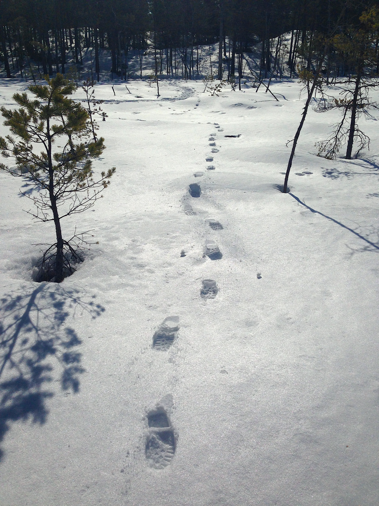
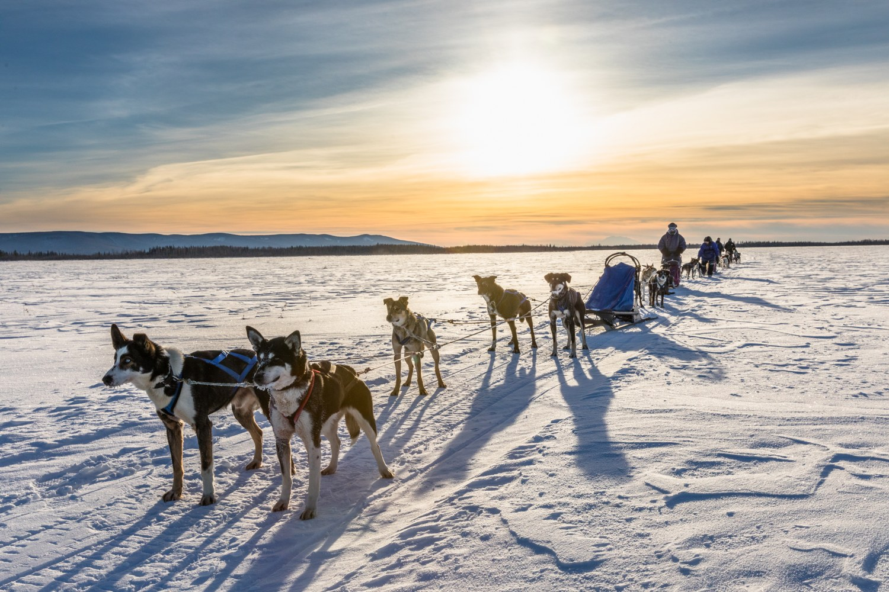
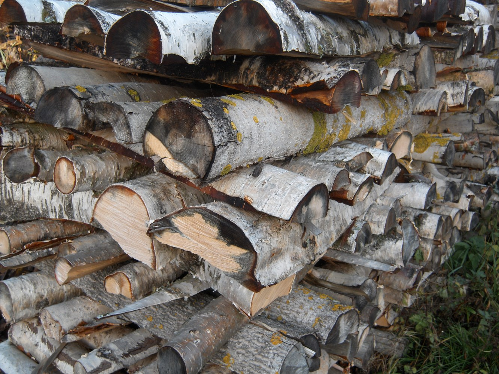

❄️ #79 — L'Hiver sur le territoirePartie 4 / 4
Abri, rituels et renouveau
8. Abri, tente et vie autour du feu
- Wigwam ou tipi d'hiver : Peau épaisse, double paroi ; chaleur au centre (le feu est déjà allumé — voir #78 pour naître). Paroi de neige entassée autour.
- Igloo (Inuit) : Blocs de neige taillés au couteau ; intérieur fond légèrement en cupule — la chaleur du corps et de la lampe à graisse fait fondre un film de glace qui scelle l'air.
- Soirées : Récits, réparation des raquettes, tannage, chants. Pierre écrit : « L'hiver oblige à rester ensemble ; c'est là que les jeunes apprennent qui ils sont. »
- Partage : Viande, fourrure, bois, nouvelles des familles voisines — un campement qui refuse de partager ne survit pas longtemps.
9. Rituels et spiritualité de l'hiver
L'hiver n'est pas « vide » de cérémonie. Ce n'est pas la saison de toutes les danses — beaucoup ont lieu au printemps ou en été — mais c'est le temps de la purification intérieure et du lien aux esprits du froid et du caribou.
- Purification au tabac et à l'écorce de bouleau avant une longue traite.
- Remerciement au premier animal de l'hiver, au premier poisson sous la glace.
- Veillées où les aînés racontent les origines du monde — « quand la terre était encore jeune et la neige plus haute ».
- Guérisseurs : plantes séchées, chants — le feu du camp comme lieu de prière, pas la friction du #78.
10. L'hiver comme temps de préparation
L'hiver n'est pas une fin : c'est le moment où l'on répare, transmet, économise — viande séchée, outils, histoires — en vue du dégel. Pierre le Fouineur écrit ces lignes pour que ceux qui lisent depuis des villes chauffées comprennent : ici, l'hiver était une maîtrise, pas un malheur subi.
« Les cèdres portent encore la neige ce matin. Les chiens tournent en rond près des traîneaux. Les Premières Nations vivent — pas malgré l'hiver, mais avec lui. Les autres saisons, je les confierai à d'autres pages. »
— Pierre le Fouineur

Neige et forêt

Raquettes et traces

Traîneau à chiens

Bois et feu
Merci à Pierre pour ce carnet, et aux nations dont les savoirs l'ont nourri. — Jean-Claude
« Pas malgré l'hiver, mais avec lui. » — Pierre le Fouineur